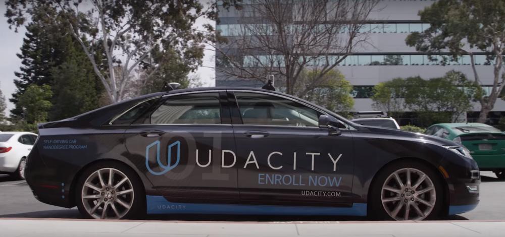
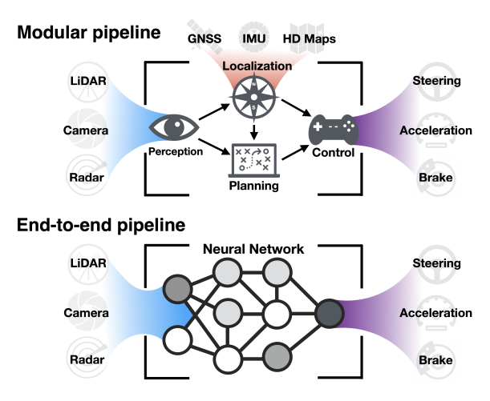
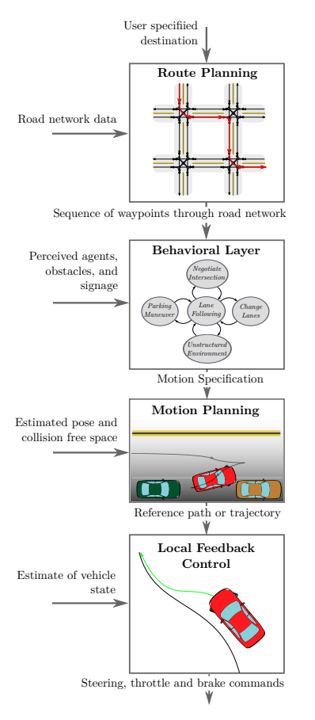

Autonomous Agents
Contents
Autonomous Agents¶
In this section we treat examples that combine deep learning based perceptive tasks and real-world motion planning. If you as an aspiring data scientist wonder which application theme to specialize on, look no further than mission critical industries - they are the drivers of the economy of every country. The robotics / self-driving cars domain requires the design of advanced agents that perceive the environment using noisy sensors, make decisions under uncertainty, actuate a host of electronics to execute decisions, all while communicate with humans in natural language or sense driver psychological / physiological state. A real world manifestation of the above architecture is shown below.
 Example of an agent (Udacity’s CARLA serf-driving car) in the late 2010s
Example of an agent (Udacity’s CARLA serf-driving car) in the late 2010s

There are two main schools of thought in this subdomain.
Approach |
Description |
|---|---|
Modular Pipeline |
In the modular architecture in here sensors, perception, planning and control subsystems that work together to achieve the task at hand. |
End-to-End Pipeline |
In end-to-end approach the entire pipeline of transforming sensory inputs to driving commands is treated as a single learning task. This is what we also call Imitation Learning (IL) and is used to determine from only pixel input the steering and acceleration controls of a vehicle. Apart from IL, Reinforcement Learning (RL) can also be used in a simulator setting to transfer the learned optimal policy in the real-world. |
 Modular vs End-to-End pipeline for real-world motion planning
Modular pipeline¶
The modular pipeline as shown below, consists of four main modules:
NOTE: In the description below the motion planning module mentioned in the figure is called trajectory generation.
 Modular pipeline functional flow -from here.
Global (Route) planning. In global route planning we are given a graph \(G=(V, E)\) and the agent must solve the problem of finding a shortest path (cost) route from the source vertex \(s\) to a destination or goal \(g\). The route planning scenarios can be fairly complicated involving a mixture of road network restricted and unrestricted (eg. parking lot) modes. Route planning is usually decoupled from the other latency-sensitive subsystems of planning - it is being very infrequently executed.
Prediction. This involves estimations of what other agents active in the same locale as the agent of interest will do next.
Behavioral decision making. Makes a decision of the best action that the agent should make given the predictions of the other agents perceived intentions, signal and traffic sign detections.
Trajectory generation. The action decided by the behavioral planning module, is translated to a trajectory the control subsystem will attempt to follow as close as possible.
End to end pipeline¶
The modular approach allows for engineering teams to divide and conquer each module almost independently of the others, provided that the system architecture governed by the interfaces of the modules allows it. But advantages go beyond the clear separation of tasks and extend to explainability: each module is free to invent the representations that is best suited for its task and compartmentalize the final decision about the trajectory of the agent, allowing us humans to go back and understand how the decision was reached.
Having said that, modular architectures are working fine as long as the representations, their transformations and the individual module decisions support the real world environment that the agent is to operate. The moment the environment deviates from the typically expected one, modular architectures require retuning to be able to accommodate more corner cases never thought during the initial design.
There are potentially tens of scenarios each with a different decision making process (reasoning) involving kids playing with balls
Take for example, the case where the perception system detects children playing on the side of the road and a ball suddenly rolling onto the road - a decision to slam the brakes would have been prudent in a residential street but very risky in a higher speed road where e.g. changing the lane would be more prudent to avoid a rear end collision. The context of decision making is complex and the end to end pipeline approach if there are enough data (supervised or reinforcing) can generalize to cover cases that were not designed in. As there is a single task, the degrees of freedom of the end to end pipeline are spent in learning the right attentional representations and the right decisions at the expense of interpretability.